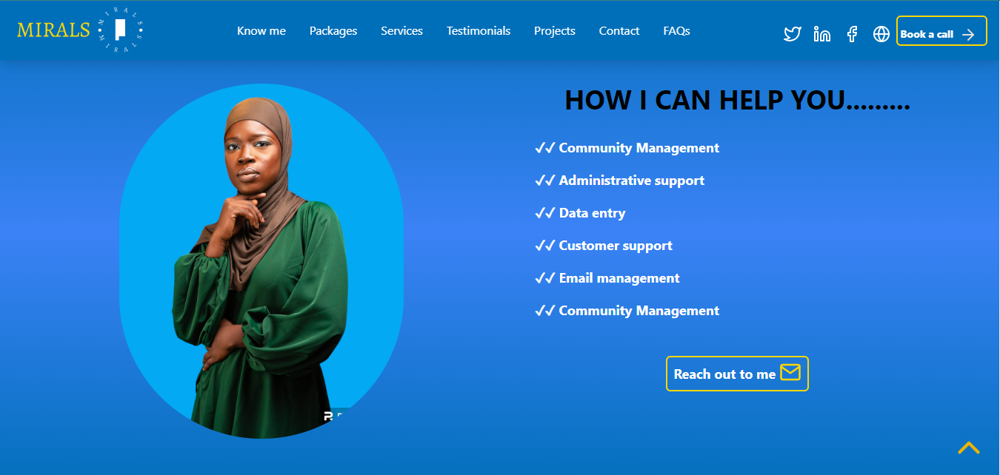

<div class="shadow-lg text-xl font-sans text-light-gray bg-gradient-to-b from-lemon-green via-dark-blue to-dark-blue">
    <div class="p-8 py-48 font-mono">
        <div class="h-screen flex-cols items-center justify-center p-8 md:p-24">
            <p class="text-2xl md:text-6xl font-sans text-center p-4 text-dark-blue font-bold">
                The Mirals Landing Page
            </p>
            <p class="text-md md:text-lg font-sans text-center p-4 text-light-gray font-bold">
                Welcome to the Mirals Website Template case study page. Here, you'll find an overview of the project,
                the tools utilized during development, and direct links to explore the official product live.
            </p>
            <div class="flex justify-center p-4 md:p-8">
                <button class="p-2 py-2 border-2 bg-dark-blue border-lemon-green text-lemon-green shadow-lg font-bold rounded-md 
                 cursor-pointer" (click)="openVoting('https://mirals.netlify.app/')">
                    <span class="p-2">View Live</span>
                    <i-feather name="globe" class="-mt-1 text-lemon-green" style="width: 30px;"> </i-feather>
                </button>
            </div>
        </div>
        <div class="flex items-center justify-center mt-4">
            <div class="grid grid-cols items-center">
                <div class="flex-cols items-center justify-center space-y-8 p-12 md:p-24">
                    
                    
                </div>
                <div class="text-sm md:text-md font-sans p-2 text-justify md:p-8">
                    <div class="grid grid-cols md:grid-cols-2 font-mono">
                        <div class="p-0 md:p-4">
                            <p class="p-2 mt-4">When I developed the landing page for Mirals, it was a
                                culmination of my expertise displayed in my LinkedIn portfolio. Mirals, impressed by my
                                work, reached out to me for their landing page needs, and I rose to the occasion.</p>

                            <p class="p-2 mt-4">I meticulously crafted the page to showcase Mirals'
                                professional skills and accomplishments. Utilizing HTML, CSS, and JavaScript, I ensured
                                an engaging and intuitive interface that perfectly encapsulates Mirals' brand identity.
                            </p>
                            <p class="p-2 mt-4">This project was set against a tight deadline, but my
                                commitment to delivering results remained unwavering. Despite the time constraints, I
                                managed to complete the landing page to Mirals' satisfaction, showcasing my ability to
                                thrive under pressure.
                            </p>
                            <p class="p-2 mt-4">The successful completion of this project not only served as
                                a testament to my technical proficiency but also deepened my understanding of client
                                requirements and expectations. It underscores my dedication to delivering customized
                                solutions that exceed client needs, even within challenging timeframes.</p>
                            <div class="p-2 mt-4 grid grid-cols-2 md:grid-cols-4">
                                <div class="p-4 text-sm md:text-md" *ngFor="let tool of tools">
                                    <div
                                        class="text-center p-1 px-2 w-30 border-2 border-lemon-green text-light-gray font-sans rounded-md cursor-pointer">
                                        {{ tool.tool }}
                                    </div>
                                </div>
                            </div>
                            <div class="flex text-center justify-center items-center p-2 md:p-8 mt-16 hidden md:block">
                                <button class="p-2 py-2 border-2 bg-lemon-green border-dark-blue text-dark-blue shadow-lg font-bold rounded-md 
                                cursor-pointer " (click)="openVoting('https://mirals.netlify.app/')">
                                    <span class="p-2">Check out the page here</span>
                                    <i-feather name="globe" class="-mt-1 text-dark-blue" style="width: 30px;">
                                    </i-feather>
                                </button>
                            </div>
                        </div>
                        <div class="p-12 md:p-24">
                            
                        </div>
                    </div>
                    <div class="flex justify-center p-2 md:p-8 mt-4 block md:hidden">
                        <button class="p-2 py-2 border-2 bg-lemon-green border-dark-blue text-dark-blue shadow-lg font-bold rounded-md 
                        cursor-pointer " (click)="openVoting('https://mirals.netlify.app/')">
                            <span class="p-2">Check out the page here</span>
                            <i-feather name="globe" class="-mt-2 text-dark-blue" style="width: 30px;">
                            </i-feather>
                        </button>
                    </div>
                </div>
            </div>
        </div>
    </div>
</div>